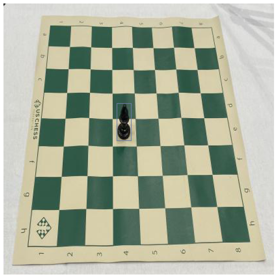

Custom Parser - Simple
Instaling icevision
# !pip install icevision[all]
# !pip install icedata
Imports
As always, let's import everything from icevision. Additionally, we will also need pandas (you might need to install it with pip install pandas).
%reload_ext autoreload
%autoreload 2
from icevision.all import *
import pandas as pd
models.torchvision.keypoint_rcnn.backbones.resnet18
torch.__version__
<icevision.models.torchvision.backbones.backbone_config.TorchvisionBackboneConfig at 0x7f95131ade90>
'1.7.1'
Download dataset
We're going to be using a small sample of the chess dataset, the full dataset is offered by roboflow here
data_url = "https://github.com/airctic/chess_sample/archive/master.zip"
data_dir = icedata.load_data(data_url, 'chess_sample', force_download=True) / 'chess_sample-master'
| | 0/? [00:00<?, ?B/s]
Understand the data format
We have the bboxes annotations like we saw in the custom parser tutorial:
detect_df = pd.read_csv(data_dir / "annotations.csv")
detect_df.head()
| filename | width | height | label | xmin | ymin | xmax | ymax | |
|---|---|---|---|---|---|---|---|---|
| 0 | 4de23afff63bc169b4ebe547a9c9b692_jpg.rf.0cf789652d85886de3d00b05bef061eb.jpg | 416 | 416 | black-bishop | 280 | 227 | 310 | 284 |
| 1 | 4de23afff63bc169b4ebe547a9c9b692_jpg.rf.0cf789652d85886de3d00b05bef061eb.jpg | 416 | 416 | black-king | 311 | 110 | 345 | 195 |
| 2 | 4de23afff63bc169b4ebe547a9c9b692_jpg.rf.0cf789652d85886de3d00b05bef061eb.jpg | 416 | 416 | black-queen | 237 | 85 | 262 | 159 |
| 3 | 4de23afff63bc169b4ebe547a9c9b692_jpg.rf.0cf789652d85886de3d00b05bef061eb.jpg | 416 | 416 | black-rook | 331 | 277 | 366 | 333 |
| 4 | 4de23afff63bc169b4ebe547a9c9b692_jpg.rf.0cf789652d85886de3d00b05bef061eb.jpg | 416 | 416 | black-rook | 235 | 3 | 255 | 51 |
match_results_df = pd.read_csv(data_dir / 'match_results.csv')
match_results_df.head()
| filename | result | |
|---|---|---|
| 0 | 66f3c2c7c10a9263de9c6e056ba5c1b9_jpg.rf.18efa20b29dfe94acf3cb63ccc92a4b3.jpg | black |
| 1 | 889c420fb266b8d0e817306110042bda_jpg.rf.187d72f3d58f732ea576641f5c702f61.jpg | black |
| 2 | 4de23afff63bc169b4ebe547a9c9b692_jpg.rf.0cf789652d85886de3d00b05bef061eb.jpg | stalemate |
| 3 | 614811e933a680fd6535ac8bf06bf530_jpg.rf.0b9ea19fb73269b21cf021c584b84aeb.jpg | black |
| 4 | 36066ba85572ce99198f1a21c2c8bbff_jpg.rf.1bb4689be2417ff995fbd5e22876c353.jpg | black |
Create the Parser
The first step is to create a template record for our specific type of dataset, in this case we're doing standard object detection:
detect_pieces = tasks.Task('detect_pieces')
classif_match_result = tasks.Task('classif_match_result')
template_record = BaseRecord((
FilepathRecordComponent(),
InstancesLabelsRecordComponent(task=detect_pieces),
BBoxesRecordComponent(task=detect_pieces),
ClassificationLabelsRecordComponent(task=classif_match_result),
))
template_record
BaseRecord
common:
- Image ID: None
- Filepath: None
- Image: None
- Image size None
detect_pieces:
- Class Map: None
- Labels: []
- BBoxes: []
classif_match_result:
- Class Map: None
- Labels: []
Now use the method generate_template that will print out all the necessary steps we have to implement.
Parser.generate_template(template_record)
class MyParser(Parser):
def __init__(self, template_record):
super().__init__(template_record=template_record)
def __iter__(self) -> Any:
def __len__(self) -> int:
def record_id(self, o) -> Hashable:
def parse_fields(self, o, record):
record.set_filepath(<Union[str, Path]>)
record.set_img_size(<ImgSize>)
record.detect_pieces.set_class_map(<ClassMap>)
record.detect_pieces.add_labels(<Sequence[Hashable]>)
record.detect_pieces.add_bboxes(<Sequence[BBox]>)
record.classif_match_result.set_class_map(<ClassMap>)
record.classif_match_result.add_labels(<Sequence[Hashable]>)
We can copy the template and use it as our starting point. Let's go over each of the methods we have to define:
-
__init__: What happens here is completely up to you, normally we have to pass some reference to our data,data_dirin our case. -
__iter__: This tells our parser how to iterate over our data, each item returned here will be passed toparse_fieldsaso. In our case we calldf.itertuplesto iterate over alldfrows. -
__len__: How many items will be iterating over. -
imageid: Should return aHashable(int,str, etc). In our case we want all the dataset items that have the samefilenameto be unified in the same record. -
parse_fields: Here is where the attributes of the record are collected, the template will suggest what methods we need to call on the record and what parameters it expects. The parameteroit receives is the item returned by__iter__.
Important
Be sure to pass the correct type on all record methods!
class ChessParser(Parser):
def __init__(self, template_record, data_dir):
super().__init__(template_record=template_record)
self.data_dir = data_dir
self.detect_df = pd.read_csv(data_dir / "annotations.csv")
self.detect_class_map = ClassMap(list(self.detect_df['label'].unique()))
self.match_results_df = pd.read_csv(data_dir / 'match_results.csv')
self.match_results_class_map = ClassMap(['black', 'white', 'stalemate'], background=None)
self._current_task = None
def __iter__(self) -> Any:
self._current_task = detect_pieces
for o in self.detect_df.itertuples():
yield o
self._current_task = classif_match_result
for o in self.match_results_df.itertuples():
yield o
def __len__(self) -> int:
return len(self.detect_df) + len(self.match_results_df)
def record_id(self, o) -> Hashable:
return o.filename
def parse_fields(self, o, record, is_new):
if is_new:
record.set_filepath(self.data_dir / 'images' / o.filename)
record.set_img_size(ImgSize(width=o.width, height=o.height))
record.detect_pieces.set_class_map(self.detect_class_map)
record.classif_match_result.set_class_map(self.match_results_class_map)
if self._current_task == detect_pieces:
record.detect_pieces.add_bboxes([BBox.from_xyxy(o.xmin, o.ymin, o.xmax, o.ymax)])
record.detect_pieces.add_labels([o.label])
if self._current_task == classif_match_result:
record.classif_match_result.add_labels([o.result])
Let's randomly split the data and parser with Parser.parse:
parser = ChessParser(template_record, data_dir)
train_records, valid_records = parser.parse()
0%| | 0/116 [00:00<?, ?it/s]
[1m[1mINFO [0m[1m[0m - [1m[34m[1mAutofixing records[0m[1m[34m[0m[1m[0m | [36micevision.parsers.parser[0m:[36mparse[0m:[36m136[0m
Let's take a look at one record:
show_record(train_records[0], display_label=False, figsize=(14, 10))

train_records[2]
BaseRecord
common:
- Image ID: 6
- Filepath: /home/lgvaz/.icevision/data/chess_sample/chess_sample-master/images/889c420fb266b8d0e817306110042bda_jpg.rf.187d72f3d58f732ea576641f5c702f61.jpg
- Image: None
- Image size ImgSize(width=416, height=416)
detect_pieces:
- Class Map: <ClassMap: {'background': 0, 'black-bishop': 1, 'black-king': 2, 'black-queen': 3, 'black-rook': 4, 'black-pawn': 5, 'black-knight': 6, 'white-queen': 7, 'white-rook': 8, 'white-king': 9, 'white-bishop': 10, 'white-knight': 11, 'white-pawn': 12}>
- Labels: ['white-rook', 'white-king', 'white-pawn', 'white-pawn', 'white-pawn', 'white-pawn', 'black-king', 'black-rook', 'black-queen', 'black-pawn', 'black-pawn', 'black-pawn']
- BBoxes: [<BBox (xmin:170, ymin:79, xmax:195, ymax:132)>, <BBox (xmin:131, ymin:129, xmax:162, ymax:213)>, <BBox (xmin:167, ymin:119, xmax:189, ymax:165)>, <BBox (xmin:136, ymin:52, xmax:158, ymax:97)>, <BBox (xmin:101, ymin:15, xmax:123, ymax:59)>, <BBox (xmin:94, ymin:256, xmax:118, ymax:304)>, <BBox (xmin:257, ymin:268, xmax:291, ymax:354)>, <BBox (xmin:335, ymin:297, xmax:368, ymax:355)>, <BBox (xmin:234, ymin:97, xmax:260, ymax:173)>, <BBox (xmin:273, ymin:84, xmax:291, ymax:128)>, <BBox (xmin:204, ymin:118, xmax:223, ymax:162)>, <BBox (xmin:248, ymin:204, xmax:270, ymax:251)>]
classif_match_result:
- Class Map: <ClassMap: {'black': 0, 'white': 1, 'stalemate': 2}>
- Labels: ['black']
Scratch
records = train_records + valid_records
len(records)
for record in records:
break
piece_value = {
'king': 0,
'pawn': 1,
'knight': 3,
'bishop': 3,
'rook': 5,
'queen': 9,
}
results = {'filename': [], 'result': []}
for record in records:
white_v, black_v = 0, 0
for label in record.detection.labels:
piece_v = piece_value[label.split('-')[-1]]
if label.startswith('black'):
black_v += piece_v
if label.startswith('white'):
white_v += piece_v
if black_v > white_v:
result = 'black'
elif white_v > black_v:
result = 'white'
else:
result = 'stalemate'
results['filename'].append(record.filepath.name)
results['result'].append(result)
df = pd.DataFrame.from_dict(results)
df.to_csv('match_results.csv', index=False)
df
7
| filename | result | |
|---|---|---|
| 0 | 66f3c2c7c10a9263de9c6e056ba5c1b9_jpg.rf.18efa20b29dfe94acf3cb63ccc92a4b3.jpg | black |
| 1 | 889c420fb266b8d0e817306110042bda_jpg.rf.187d72f3d58f732ea576641f5c702f61.jpg | black |
| 2 | 4de23afff63bc169b4ebe547a9c9b692_jpg.rf.0cf789652d85886de3d00b05bef061eb.jpg | stalemate |
| 3 | 614811e933a680fd6535ac8bf06bf530_jpg.rf.0b9ea19fb73269b21cf021c584b84aeb.jpg | black |
| 4 | 36066ba85572ce99198f1a21c2c8bbff_jpg.rf.1bb4689be2417ff995fbd5e22876c353.jpg | black |
| 5 | e79deba8fe520409790b601ad61da4ee_jpg.rf.016bc04dee292f80d1f975931f32bc21.jpg | black |
| 6 | 5cecd3b3946aac5c713a51e0bd4617c9_jpg.rf.03286d3792ba33d52a3654e14735c974.jpg | black |
Next steps
- This was just merged, come help us adjusting the documentation and fixing the bugs
Conclusion
And that's it! Now that you have your data in the standard library record format, you can use it to create a Dataset, visualize the image with the annotations and basically use all helper functions that IceVision provides!
Happy Learning!
If you need any assistance, feel free to join our forum.